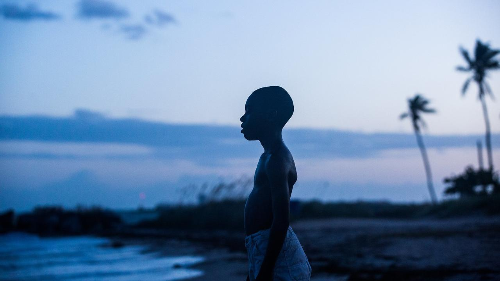
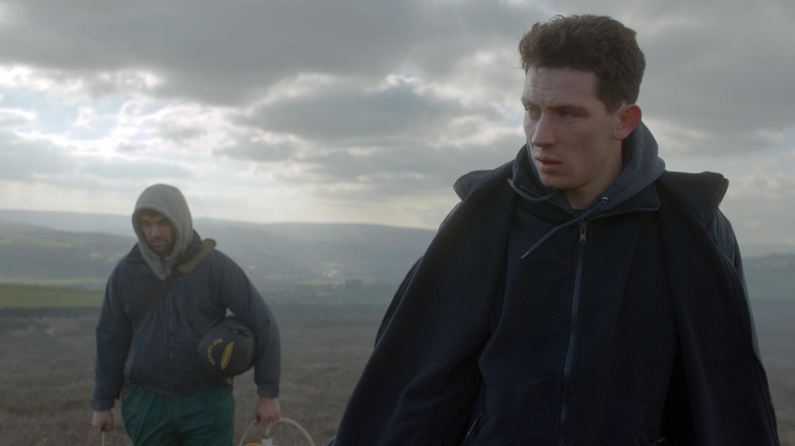
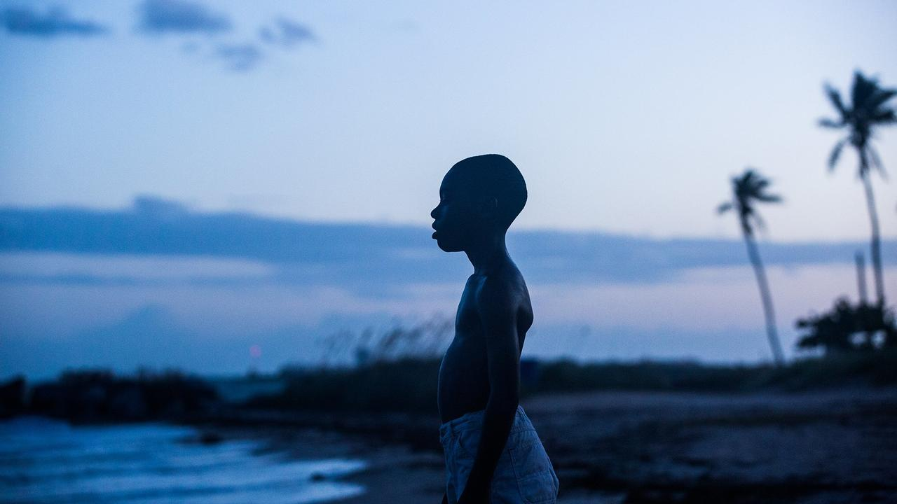
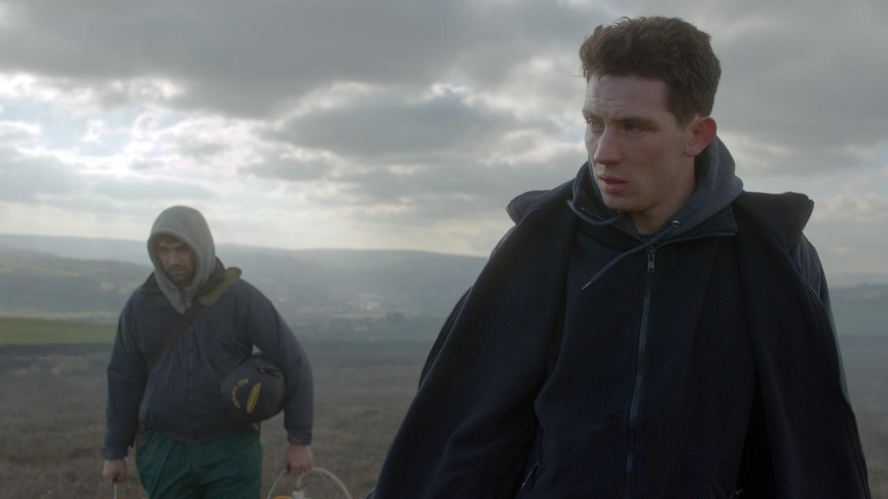

PARIS IS BURNING
THE HANDMAIDEN
CALL ME BY YOUR NAME

MOONLIGHT
CAROL
BROKEBACK MOUNTAIN
THE WAY HE LOOKS
LAURENCE ANYWAYS
PRIDE

GOD'S OWN COUNTRY
PARIAH
WEEKEND

LOVE, SIMON
BLUE IS THE WARMEST COLOR
This website lists some of the best LGBT films of all time. To sort by title, year, average critic (Rotten Tomatoes) rating, or average fan (Letterboxd) rating, click the top of each table column. For more information about specific genres, the history of LGBT film, and myself, check the links at the top of the page.
My name is Julia McNeill, and I'm at junior at New York University, studying Art History, Marketing, and Web Development. I've been passionate about the genre of LGBT Film for over five years, and want to share that love with others. I've watched each of the films on this website myself; however, the ratings shown are average critic and fan ratings. I created this website as part of my Introduction to Web Design class! You can find my Letterboxd account here.
| Film | Year | Rotten Tomatoes Rating | Letterboxd Rating | Description |
|---|---|---|---|---|
PARIS IS BURNING |
1990 | 99+% | 4.3 | This documentary focuses on drag queens living in New York City and their "house" culture, which provides a sense of community and support for the flamboyant and often socially shunned performers. Groups from each house compete in elaborate balls that take cues from the world of fashion. Also touching on issues of racism and poverty, the film features interviews with a number of renowned drag queens, including Willi Ninja, Pepper LaBeija and Dorian Corey. |
THE HANDMAIDEN |
2016 | 90% | 4.3 | With help from an orphaned pickpocket (Kim Tae-ri), a Korean con man (Ha Jung-woo) devises an elaborate plot to seduce and bilk a Japanese woman (Kim Min-hee) out of her inheritance. |
CALL ME BY YOUR NAME |
2017 | 95% | 4.2 | It's the summer of 1983, and precocious 17-year-old Elio Perlman is spending the days with his family at their 17th-century villa in Lombardy, Italy. He soon meets Oliver, a handsome doctoral student who's working as an intern for Elio's father. Amid the sun-drenched splendor of their surroundings, Elio and Oliver discover the heady beauty of awakening desire over the course of a summer that will alter their lives forever. |
 MOONLIGHT |
2016 | 98% | 4.2 | A look at three defining chapters in the life of Chiron, a young black man growing up in Miami. His epic journey to manhood is guided by the kindness, support and love of the community that helps raise him. |
CAROL |
2015 | 95% | 4.0 | Therese Belivet (Rooney Mara) spots the beautiful, elegant Carol (Cate Blanchett) perusing the doll displays in a 1950s Manhattan department store. The two women develop a fast bond that becomes a love with complicated consequences. |
BROKEBACK MOUNTAIN |
2005 | 87% | 4.0 | In 1963, rodeo cowboy Jack Twist (Jake Gyllenhaal) and ranch hand Ennis Del Mar (Heath Ledger) are hired by rancher Joe Aguirre (Randy Quaid) as sheep herders in Wyoming. One night on Brokeback Mountain, Jack makes a drunken pass at Ennis that is eventually reciprocated. Though Ennis marries his longtime sweetheart, Alma (Michelle Williams), and Jack marries a fellow rodeo rider (Anne Hathaway), the two men keep up their tortured and sporadic affair over the course of 20 years. |
THE WAY HE LOOKS |
2014 | 92% | 4.0 | Leonardo is a blind teenager searching for independence. His everyday life, the relationship with his best friend, Giovana, and the way he sees the world change completely with the arrival of Gabriel. |
LAURENCE ANYWAYS |
2012 | 84% | 3.9 | The story of an impossible love between a woman named Fred and a transgender woman named Laurence who reveals her inner desire to become her true self: a woman. |
PRIDE |
2014 | 92% | 3.9 | Realising that they share common foes in Margaret Thatcher, the police and the conservative press, London-based gay and lesbian activists lend their support to striking miners in 1984 Wales. |
 GOD'S OWN COUNTRY |
2017 | 99% | 3.9 | A young farmer numbs his frustrations with drinking and casual sex until a Romanian migrant worker sets him on a new path. |
PARIAH |
2011 | 94% | 3.9 | Teenage Alike (Adepero Oduye) lives in Brooklyn's Fort Greene neighborhood with her parents (Charles Parnell, Kim Wayans) and younger sister (Sahra Mellesse). A lesbian, Alike quietly embraces her identity and is looking for her first lover, but she wonders how much she can truly confide in her family, especially with her parents' marriage already strained. When Alike's mother presses her to befriend a colleague's daughter (Aasha Davis), Alike finds the gal to be a pleasant companion. |
WEEKEND |
2011 | 95% | 3.9 | Following Russell and Glen as their one-night stand unexpectedly turns into something far more reaching. Following a Friday night party with his friends, Russell pulls Glen at a club, and, instead of never seeing each other again, the two men spend most of the next day and the following night together. |
LOVE, SIMON |
2018 | 92% | 3.9 | Everyone deserves a great love story, but for 17-year-old Simon Spier, it's a little more complicated. He hasn't told his family or friends that he's gay, and he doesn't know the identity of the anonymous classmate that he's fallen for online. Resolving both issues proves hilarious, terrifying and life-changing. |
BLUE IS THE WARMEST COLOR |
2013 | 90% | 3.8 | A French teen (Adèle Exarchopoulos) forms a deep emotional and sexual connection with an older art student (Léa Seydoux) she met in a lesbian bar. |
Website is in continuous development!